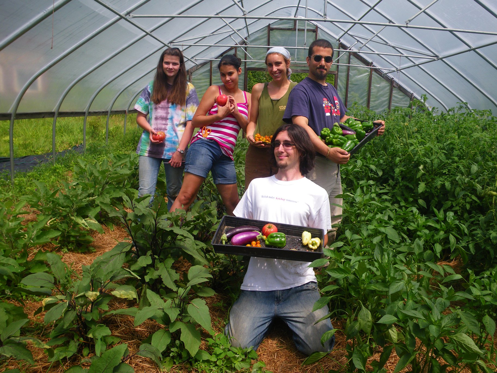

School Gardens
 We have a long and vibrant history of helping schools
establish school gardens locally and throughout the Northeast. School gardens are a wonderful way to
engage students in developing life-long skills for food resiliency, health, and healing through connecting
to the earth and each other. School gardens and composting programs are an exciting element of the growing
“Farm to School” movement.
We have a long and vibrant history of helping schools
establish school gardens locally and throughout the Northeast. School gardens are a wonderful way to
engage students in developing life-long skills for food resiliency, health, and healing through connecting
to the earth and each other. School gardens and composting programs are an exciting element of the growing
“Farm to School” movement.
School Garden resources
 We offer an annual workshop for school and community educators at our site each summer (contact us for details). In addition, we can provide customized Grow Food Everywhere (TM) workshops and trainings at your school (contact us for fees). Please, find below free information to support your growing and learning for education purposes!It's never funded by any corporate sponsors, so if you are inspired and find them useful, feel free to make a contribution, and, please, do cite Seeds of Solidarity when using.
Seeds of Solidarity


165 Chestnut Hill Rd
Orange, Massachusetts
01364-1078
Phone: (978) 544-9023